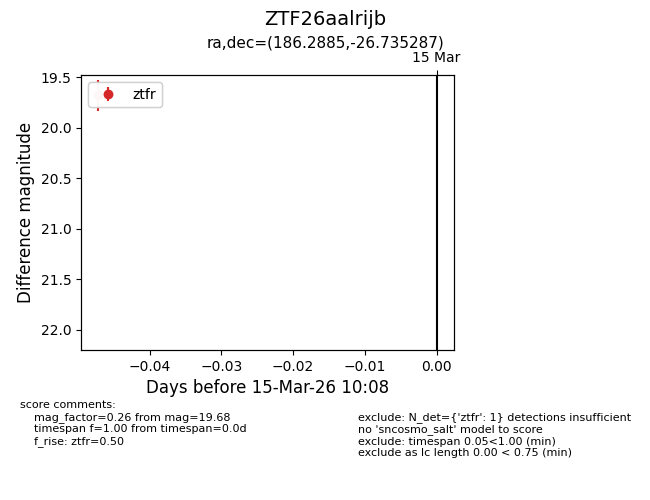
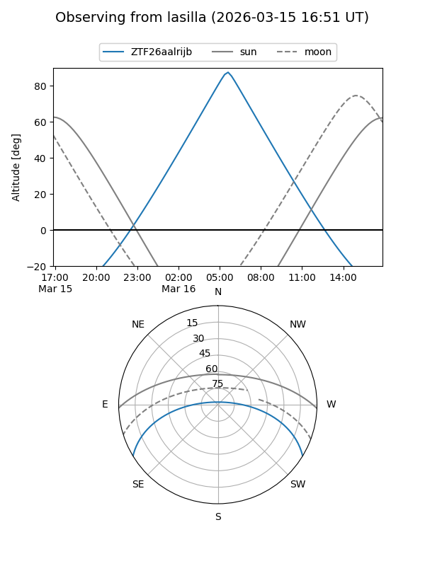
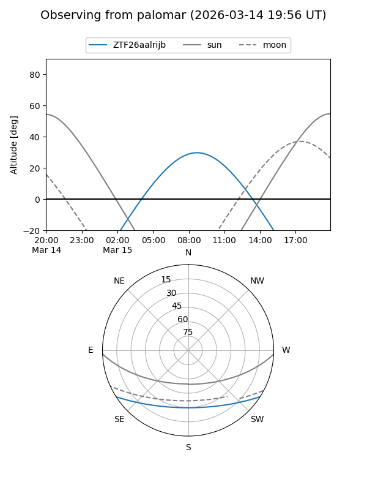

ZTF26aalrijb
Target ZTF26aalrijb at 2026-03-15 10:10
Aliases and brokers:
FINK: link
Lasair: link
ALeRCE: link
alt names
ZTF26aalrijb (ztf,fink_ztf)
Coordinates:
equatorial (ra, dec) = 186.2885,-26.73529
equatorial (HMS+DMS) = 12:25:09.23,-26:44:07.03
galactic (l, b) = (295.6960,+35.76689)
Flags:
Photometry:
last ztfr=19.68
1 ztfr detections
Lightcurve

Visibility


Additional plots